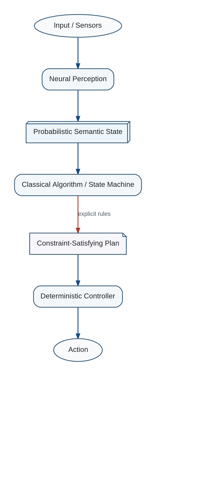

The optimal unit of allocation is usually not the whole task but an operation or pipeline stage.
Hybrid Neural and Algorithmic Processing

Sensors -> Neural Perception -> Probabilistic State -> Algorithmic Constraint Solver -> Planned Trajectory -> Learned Correction -> Deterministic Controller
A stage can remain neural where the functional is implicit and data-rich, while safety envelopes, invariants, accounting, and discrete protocol behavior remain explicit.
This division provides interpretability and guarantees where they matter without forcing perception or language into brittle hand-written rules.